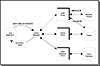

|
|
 |

|
Developing Java Enterprise Applications
by Stephen Asbury ; Scott R. Weiner
Wiley Computer Publishing, John Wiley & Sons, Inc.
ISBN: 0471327565 Pub Date: 02/01/99

|
| Table 3.7 JDBC Protocol Structure
|
|
| PROTOCOL COMPONENT
| MEANING
|
|
| jdbc
| Specifies that we are using a JDBC protocol.
|
|
| Sub–protocol
| Indicates the type of data source. For example, the URL could be jdbc:oracle:myDatabase or jdbc:odbc:myDatabase. When DriverManager is looking for a registered driver to connect to your data source, it passes this URL. The driver can then determine if it can handle this data source.
|
|
| Datasource–name
| The name your driver or your DBMS uses to identify the data source. For example, with ODBC, the data source name is the name registered with ODBC and could differ from the name of the actual database it maps to; with Sybase, the data source name could be the name of the configuration data used to connect to the database over the network.
|
|
| Optional–parameter
| Can be used to pass extra information that is specific to the driver. The protocol can take zero or more optional parameters in the format of key/value pairs. For example, a URL might look like this: jdbc:odbc:Inventory;user=admin;password=xyz
|
|

Figure 3.4 Connecting to a data source.
You now have a connection object that can be used to access the database, assuming that you specified the URL correctly and that you have an appropriate driver. There are four types (levels) of drivers today; they are discussed in the following section.
Driver Types
JavaSoft has segmented JDBC drivers into four categories. These categories, referred to as levels, range from platform–specific bridges (level 1) to pure Java database connections (level 4). The four levels are:
- • JDBC–ODBC bridge plus ODBC driver
- • Native–API partly Java driver
- • JDBC–Net pure Java driver
- • Native–protocol pure Java driver
JavaSoft believes that over time, most drivers will be level 3 or 4. This means that most drivers should be pure Java and run on most platforms. Let’s explore each of the levels in more detail:
- 1. JDBC–ODBC bridge plus ODBC driver. The JavaSoft bridge product provides JDBC access via ODBC drivers. This is a simple JDBC driver that supports the ODBC capabilities and doesn’t necessarily support all of the capabilities of a particular data source. It is common that ODBC binary code, and in many cases database client code, must be loaded on each client machine that uses this driver. If you use this type of driver, you typically are not concerned with installing extra software on your client machines. This type of driver is also useful in a server application that is part of a three–tier architecture. In this case, the ODBC driver software and possibly the database client code are installed on the server. Clients connect to the application running on the middle tier. The application uses the JDBC–ODBC bridge to communicate with ODBC, which in turn communicates with the database running on the third tier. Performance is the main issue in this case. The middle–tier server is hit with client requests that must be transported through the bridge. A pure Java solution should be more efficient.
- 2. Native–API partly–Java driver. Most vendors provide platform–specific libraries for communicating with their databases. These libraries are usually platform–specific compiled libraries that are typically implemented in C or a similar language. These libraries can take advantage of database–specific features. However, they must be installed on client machines. The JDBC driver at this level is written in Java, but it makes calls out to the database client library. Although this solution is not completely portable, at least the JDBC driver can take advantage of all the features provided by the database client library. This level of driver is useful in the same scenarios as level 1 drivers, except that this level can access more database–specific features.
- 3. JDBC–Net pure Java driver. Middleware products that allow you to remotely access enterprise resources, such as databases, are emerging. Components of one new class of middleware are referred to as application servers. These products often have their own network protocol. By sending specific instructions to the application server, it can map these database–independent calls to database–specific requests. These products enable you to centralize issues like security, load balancing, and so on, outside your application. The JDBC drivers for these products map JDBC calls to the middleware–specific calls. A demonstration copy of BEA WebLogic Application Server is included on this book’s companion CD–ROM. Examples later in this book will show you how to use the application server to access enterprise resources.
- 4. Native–protocol pure Java driver. Database vendors are starting to support network protocols that allow you to directly communicate with the database over the network. The JDBC drivers can be completely implemented in Java and do not need to rely on a specific client library. Rather, they send commands directly over the network to the database. This is a flexible model, but each vendor has its own protocol. To access multiple databases using this technique, you may need multiple drivers, because each vendor may have its own unique driver for leveraging vendor–specific features such as transaction management.
Connection Example
Once you have chosen a JDBC driver, you need to establish a connection to your database. The following example shows the typical process for connecting to a data source using JDBC. The first bolded line loads the JDBC–ODBC bridge. When the driver loads, it registers itself with DriverManager in order to be located when a driver–manageable request to connect to a data source is issued.
After loading the driver class, pass the URL to DriverManager in the getConnection method. DriverManager should find the driver and return a database connection to an ODBC data source called Inventory.
|


){kind=link}
){kind=link}